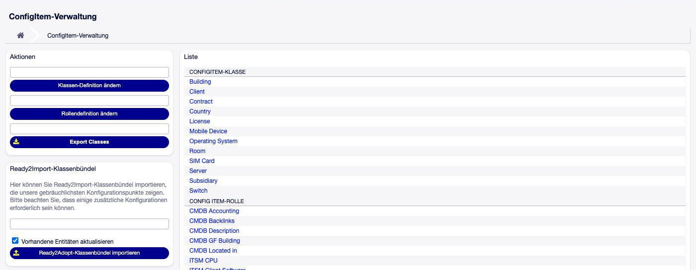
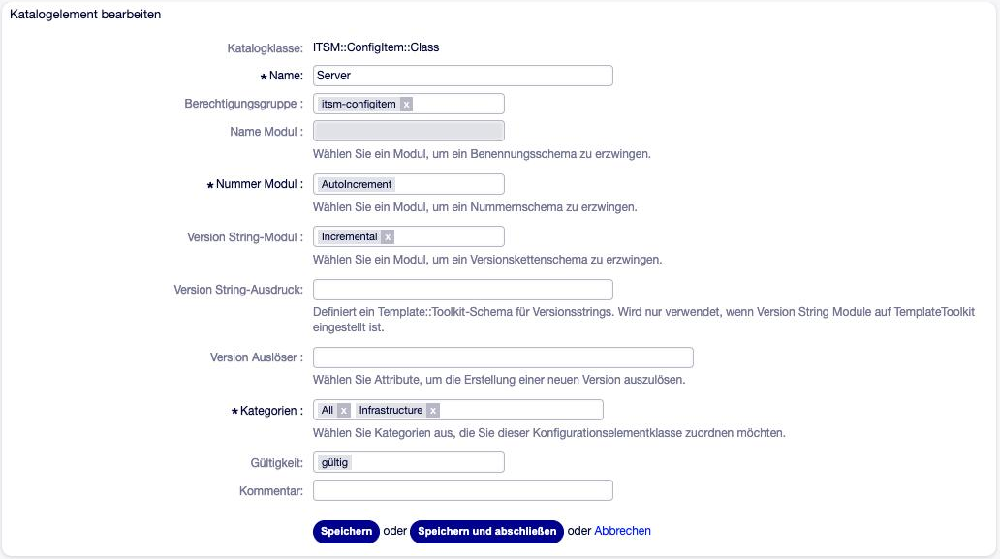
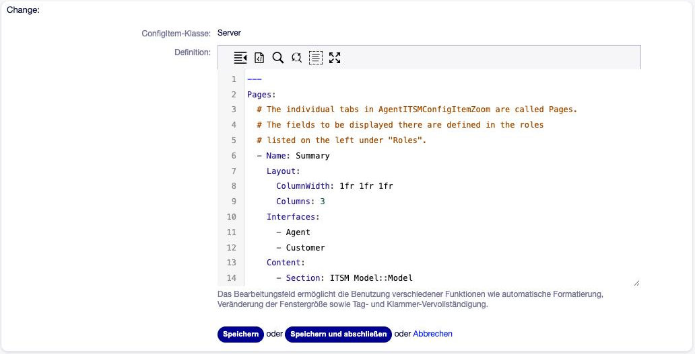

Klassen einrichten¶
Eine Klasse legt fest, welche Art von Config Item erfasst wird — Server, Notebook, Lizenz, Vertrag. Zu jeder Klasse gehören zwei Dinge, die an verschiedenen Stellen gepflegt werden:
Klassen-Eigenschaften |
Klassendefinition |
|
|---|---|---|
Was |
Name, Berechtigungsgruppe, Kategorien, Nummern- und Versionsmodul, Versionsauslöser |
Felder, Abschnitte, Reiter, Layout |
Wo |
Admin → General Catalog → ITSM::ConfigItem::Class |
Admin → Config Items |
Format |
Formular |
YAML (siehe Klassendefinition (YAML)) |
Schnellstart mit den mitgelieferten Klassen¶
Die Installation des Pakets legt keine Klassen an. Mitgeliefert wird aber ein fertiges Klassenpaket (Ready2Import) mit 34 Klassen und 35 Rollen — von Computer, Server und Netzwerk über Standort, Gebäude und Raum bis Lizenz, Vertrag und Zertifikat. Es ist ein guter Ausgangspunkt, auch wenn man am Ende nur einen Teil davon nutzt.
Admin → Config Items öffnen.
Links im Kasten Ready2Import-Klassenbündel das Paket wählen.
Die Bestätigung listet alle Klassen und Rollen, die angelegt werden. Importieren.

Abb. 2 Ready2Import-Klassenbündel in der ConfigItem-Verwaltung¶
Warnung
Der Import ist nicht rückgängig zu machen. Er legt rund hundert dynamische Felder an, Klassen und Rollen im General Catalog sowie neue Namensräume für dynamische Felder. Klassen und Rollen lassen sich in OTOBO grundsätzlich nicht löschen, nur ungültig setzen. Den Import daher zuerst auf einem Testsystem ausprobieren.
Warnung
Die Option Vorhandene Entitäten aktualisieren ist vorausgewählt. Wird das Paket ein zweites Mal importiert, überschreibt es alle angepassten Klassendefinitionen mit dem Auslieferungsstand und setzt ungültig gesetzte Klassen und Rollen wieder auf gültig. Bereits vorhandene dynamische Felder bleiben dagegen unverändert.
Eigene Klassenpakete lassen sich auf dieselbe Art anbieten: Eine YAML-Datei im
Exportformat (siehe Klassen exportieren und importieren) im Verzeichnis
var/itsm/configitemclasses/ der OTOBO-Installation erscheint in derselben
Auswahl. Ein Upload über die Oberfläche gibt es nicht.
Eine neue Klasse anlegen¶
1. Klasse im General Catalog anlegen¶
Admin → General Catalog → Katalogklasse ITSM::ConfigItem::Class →
Katalogeintrag hinzufügen.

Abb. 3 Eigenschaften einer CMDB-Klasse im General Catalog¶
Die Felder im Einzelnen:
- Name
Name der Klasse. Er erscheint in Übersicht, Suche und Menüs und wird — falls vorhanden — übersetzt.
- Berechtigungsgruppe (Permission Group)
Agentengruppe, deren Mitglieder Config Items dieser Klasse sehen (Recht ro) bzw. anlegen und bearbeiten (Recht rw) dürfen. Details in Berechtigungen.
Warnung
Das Feld ist nicht als Pflichtfeld markiert, muss aber gesetzt werden. Eine Klasse ohne Berechtigungsgruppe ist für alle Agenten unsichtbar — in Übersicht, Suche, beim Anlegen und über den Webservice.
- Kategorien (Pflicht)
Unter welchen Kategorien der CMDB-Übersicht die Klasse als Reiter erscheint. Kategorien sind selbst Einträge im General Catalog (
ITSM::ConfigItem::Class::Category);Allwird bei der Installation angelegt. Eine Klasse ohne Kategorie taucht in der Übersicht nicht auf.- Nummer Modul (Pflicht)
Erzeugt die Config-Item-Nummer. Mitgeliefert wird nur
AutoIncrement(fortlaufend).- Name Modul
Erzeugt den Namen automatisch. OTOBO liefert kein solches Modul mit; die Auswahl ist leer, der Name wird von Hand vergeben.
- Version String-Modul und Version String-Ausdruck
Wie die Versionsbezeichnung (Version String) entsteht:
Incremental— fortlaufende Nummer (Voreinstellung),TemplateToolkit— Bezeichnung aus dem Versionsausdruck, einer Template-Toolkit-Vorlage über die Daten des Config Items (Feld Version String-Ausdruck),leer — die Bearbeiten-Maske bietet ein Feld zur freien Eingabe.
- Version Auslöser (Version Trigger)
Welche Änderungen eine neue Version des Config Items erzeugen. Siehe Wann entsteht eine neue Version eines Config Items?.
2. Definition schreiben¶
Admin → Config Items → Klasse im Kasten Aktionen wählen → Klassen-Definition ändern.

Abb. 4 Editor der Klassendefinition¶
Eine minimale, lauffähige Definition braucht einen Reiter und einen Abschnitt:
---
Pages:
- Name: Summary
Content:
- Section: General
- Section: Description
Sections:
General:
Content:
- DF: Server-Hostname
Description:
Type: Description
Die verwendeten Felder (hier Server-Hostname) müssen vorher als dynamische
Felder mit Objekttyp ITSM ConfigElement angelegt sein — siehe Dynamische Felder für Config Items. Den
vollständigen Schlüsselumfang beschreibt Klassendefinition (YAML).
Tipp
Die Höhe des Editors lässt sich über
ITSMConfigItem::Frontend::AdminITSMConfigItem###EditorRows (Standard 30
Zeilen) vergrößern.
3. Berechtigung vergeben¶
Die Agenten, die mit der Klasse arbeiten, brauchen Rechte in der
Berechtigungsgruppe der Klasse und in der Gruppe itsm-configitem, die den
Zugang zu den CMDB-Masken selbst regelt. Siehe Berechtigungen.
4. Übersichtsspalten festlegen (optional)¶
Welche Spalten die Übersicht für diese Klasse zeigt, steuern
ITSMConfigItem::Frontend::AgentITSMConfigItem###ClassColumnsDefault und
…###ClassColumnsAvailable (Schlüssel ist der Klassenname). Siehe
Übersicht.
Versionen der Definition¶
Jedes Speichern mit geändertem Text erzeugt eine neue Version der Definition — auch wenn nur ein Kommentar oder eine Einrückung geändert wurde. Die Liste Versionen auf der Klassenseite zeigt alle bisherigen Stände; ältere Stände lassen sich ansehen, aber weder löschen noch direkt reaktivieren. Zurück geht es, indem man den alten Text erneut speichert.
Was eine neue Definition für bestehende Config Items bedeutet:
Betroffen sind nur Config Items, deren Verwendungsstatus die Funktionalität preproductive oder productive hat (siehe Verwendungs- und Vorfallstatus). Config Items in einem postproductive Status — etwa Außer Dienst — behalten ihre alte Definition.
Jedes betroffene Config Item erhält einen Historieneintrag Definition aktualisiert.
Ist bei der Klasse der Versionsauslöser Definition Update gesetzt, bekommt jedes betroffene Config Item eine neue Version. Ohne diesen Auslöser wird die aktuelle Version auf die neue Definition umgestellt.
Bemerkung
Felder, die aus der Definition entfernt werden, verschwinden aus der Anzeige — ihre Werte bleiben in der Datenbank erhalten. Wird das Feld wieder aufgenommen, sind die Werte wieder sichtbar.
Warnung
Eine Klasse mit vielen Config Items und dem Auslöser Definition Update erzeugt bei jedem Speichern der Definition eine neue Version pro Config Item. Größere Überarbeitungen daher gesammelt speichern, nicht Zeile für Zeile.
Die Bearbeiten-Maske verwendet immer die neueste Definition. Wird ein älteres Config Item bearbeitet und gespeichert, wird es damit auf die aktuelle Definition gehoben. Die Detailansicht zeigt dagegen jede Version mit der Definition, die zu ihr gehört.
Wann entsteht eine neue Version eines Config Items?¶
Beim Speichern vergleicht OTOBO die Werte mit der aktuellen Version. Eine neue Version entsteht nur, wenn sich ein Attribut geändert hat, das in den Versionsauslösern der Klasse steht. Sonst wird die aktuelle Version überschrieben — der vorherige Wert ist dann nur noch in der Historie zu sehen.
Als Versionsauslöser wählbar sind:
NameDescription(Beschreibung)DeplStateID(Verwendungsstatus)InciStateID(Vorfallstatus)DefinitionUpdate(neue Klassendefinition, siehe oben)jedes dynamische Feld der Klasse als
DynamicField_<Name>
Tipp
Die Wahl der Auslöser ist eine fachliche Entscheidung: Wer nachvollziehen will, wann ein Server von Test auf Produktion ging oder wann sich die Seriennummer änderte, nimmt diese Attribute auf. Wer jede Kleinigkeit als Version führt, bekommt lange, unübersichtliche Versionslisten.
Die Versionsauslöser gelten in der Bearbeiten-Maske, bei der Sammelaktion, beim Import und beim Webservice. Eine Ausnahme: Die Webservice-Operation ConfigItemUpsert schreibt Referenz- und Lens-Felder nachträglich direkt in die aktuelle Version — Änderungen an diesen Feldern erzeugen dort nie eine neue Version (siehe Webservice (Generic Interface)).
Nachträglich geänderte Felder: Sync CI Definitions¶
Die Klassendefinition speichert beim Speichern eine Kopie der Feldeinstellungen. Wird danach ein dynamisches Feld geändert — etwa neue Auswahlwerte eines Dropdowns oder eine andere Beschriftung —, wirkt das auf die Config Items erst, wenn die Definitionen nachgezogen werden.
OTOBO weist darauf in Admin → Dynamische Felder mit einem Hinweis hin:
You have ITSMConfigItem definitions which are not synchronized …
Die Schaltfläche Sync CI Definitions erzeugt für jede betroffene Klasse eine neue Definitionsversion mit unverändertem Text — mit den oben beschriebenen Folgen für die Config Items.
Warnung
Ein umbenanntes Feld wird in der Definition nicht automatisch nachgezogen. Der Name muss im YAML von Hand angepasst werden, sonst schlägt das nächste Speichern der Definition fehl.
Klassen exportieren und importieren¶
Klassen lassen sich samt Definition und Feldern zwischen Systemen übertragen — typisch vom Test- auf das Produktivsystem.
Export
Oberfläche: Admin → Config Items → im Kasten Aktionen über der Schaltfläche Export Classes Klassen und Rollen wählen → Download
ExportClass.yml.Konsole:
bin/otobo.Console.pl Admin::ITSM::ConfigItem::ClassExport \ --class Server --class "ITSM Contact" --file server.yml
Import
Konsole:
bin/otobo.Console.pl Admin::ITSM::ConfigItem::ClassImport --file server.yml --update
Ohne
--updatebricht der Import ab, sobald eine Klasse oder Rolle mit gleichem Namen existiert.Oberfläche: nur über das Verzeichnis
var/itsm/configitemclasses/(siehe oben).
Dateiformat
Eine Liste von Einträgen; jeder Eintrag ist eine Klasse oder eine Rolle:
---
- Class:
Name: Server
Categories:
- All
- Infrastructure
PermissionGroup: itsm-configitem
NumberModule: AutoIncrement
VersionStringModule: Incremental
VersionTrigger:
- DeplStateID
Definition: |
---
Pages:
- Name: Summary
Content:
- Section: General
Sections:
General:
Content:
- DF: Server-Hostname
DynamicFields:
Server-Hostname:
Name: Server-Hostname
Label: Hostname
FieldType: Text
ObjectType: ITSMConfigItem
Config:
DefaultValue: ''
- RoleName: ITSM Contact
Definition: |
---
Sections:
Contact:
Content:
- DF: Contact-Administrator
ClassEigenschaften der Klasse.
PermissionGroupist ein Gruppenname.RoleNameKennzeichnet den Eintrag als Rolle.
DefinitionDie Definition als Text — entweder in Anführungszeichen oder, lesbarer, als Block mit
|.DynamicFieldsDie Felder, die die Klasse verwendet, mit ihrer Konfiguration. IDs (Klassen, Queues, Lens-Bezüge) stehen hier als Namen und werden beim Import zurückübersetzt.
Beim Import passiert in dieser Reihenfolge: fehlende Kategorien anlegen → Klassen und Rollen anlegen oder aktualisieren → neue Feld-Namensräume eintragen → fehlende Felder anlegen → Definitionen speichern und prüfen.
Warnung
Vorhandene dynamische Felder werden beim Import nie verändert, auch nicht
mit --update. Hat sich ein Feld auf dem Quellsystem geändert, muss es auf
dem Zielsystem von Hand angepasst werden.
Warnung
Referenzfelder auf Klassen, die es auf dem Zielsystem nicht gibt. In der
Exportdatei stehen die erlaubten Klassen eines Referenzfeldes (ClassIDs)
als Namen. Existiert eine dieser Klassen beim Import nicht, entsteht in der
Feldkonfiguration ein leerer Eintrag. Die Auswahlsuche lehnt eine solche
Liste vollständig ab: Im Eingabemodus Einfachauswahl bleibt die Liste leer,
und wer das Config Item danach speichert, überschreibt den gespeicherten
Wert mit leer — ohne Fehlermeldung in der Oberfläche.
Deshalb die referenzierten Klassen immer mit oder vor den Klassen importieren, die auf sie verweisen, und nach dem Import die Referenzfelder in Admin → Dynamische Felder öffnen: Die Klasseneinschränkung neu auswählen und speichern entfernt leere Einträge.
Warnung
Der Import läuft nicht in einer Transaktion. Scheitert eine Definition an der Prüfung (Meldung Could not store definition.), sind Klassen, Rollen und Felder bereits angelegt. Die eigentliche Ursache steht dann nicht in der Meldung — die Definition im Editor erneut speichern zeigt sie.
Warnung
Eine allein exportierte Rolle enthält keine Felddefinitionen. Rollen daher immer zusammen mit einer Klasse exportieren, die sie verwendet — sonst scheitert der Import auf einem System, dem die Felder fehlen.
Nicht übertragen wird der Versionsausdruck (VersionStringExpression) des
Moduls TemplateToolkit; er muss auf dem Zielsystem neu eingetragen werden.
Feldnamen im Import müssen dem Muster Buchstaben, Ziffern, Bindestrich
entsprechen. Der Teil vor dem ersten Bindestrich gilt als Namensraum
(Server-Hostname → Namensraum Server) und wird in
DynamicField::Namespaces eingetragen.
OTOBO 11.1
Die Namensräume stehen in 11.1 in Namespaces###DynamicField
(neu: Namespaces###Global für Felder und Prozesse gemeinsam). Beim
Update auf 11.1 werden bestehende Einträge nach Namespaces###Global
übernommen.
Migration aus OTOBO 10 oder OTRS¶
Bestehende CMDB-Daten aus OTOBO 10 (XML-Definitionen) werden mit einem Konsolenbefehl auf das Feldmodell von 11.0 umgestellt:
bin/otobo.Console.pl Admin::ITSM::ConfigItem::UpgradeTo11
Der Befehl arbeitet in fünf Schritten, die sich mit --start-at einzeln
ansteuern lassen:
Schritt |
Inhalt |
|---|---|
0 |
Attribut-Zuordnung vorbereiten: je Klasse eine Datei
|
1 |
Definitionen vorbereiten: neue Klassendefinitionen und Felddefinitionen als Dateien. |
2 |
Definitionen migrieren: Felder anlegen, Definitionen umschreiben. |
3 |
Attributwerte migrieren. |
4 |
Altdaten löschen (fragt nach). |
Optionen: --use-defaults (ohne Rückfragen), --start-at 0…4, --tmpdir
(Arbeitsverzeichnis) und --no-namespace <Attribut,Attribut> — eine
Liste alter Attributschlüssel, deren neue Felder ohne Namensraum-Präfix
angelegt werden.
Warnung
Schritt 2 überschreibt die Klasseneigenschaften mit Standardwerten: Berechtigungsgruppe
itsm-configitem, NummernmodulAutoIncrement, VersionsmodulIncremental, KategorieAll. Eigene Werte danach neu setzen.Die migrierten Definitionen werden ohne Prüfung gespeichert. Jede Klasse danach einmal im Editor öffnen und speichern.
Nach einem Abbruch setzt der Befehl nicht automatisch fort, sondern beginnt wieder bei Schritt 0. Mit
--start-atgezielt fortsetzen.
Alte Referenzfelder des OTOBO-10-Zusatzpakets ITSMConfigItemReference stellt
Admin::ITSM::ConfigItem::ConvertLegacyRefDFs auf die Standardfeldtypen um.